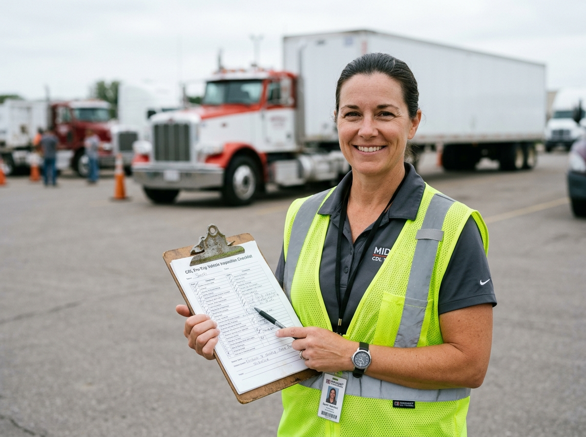
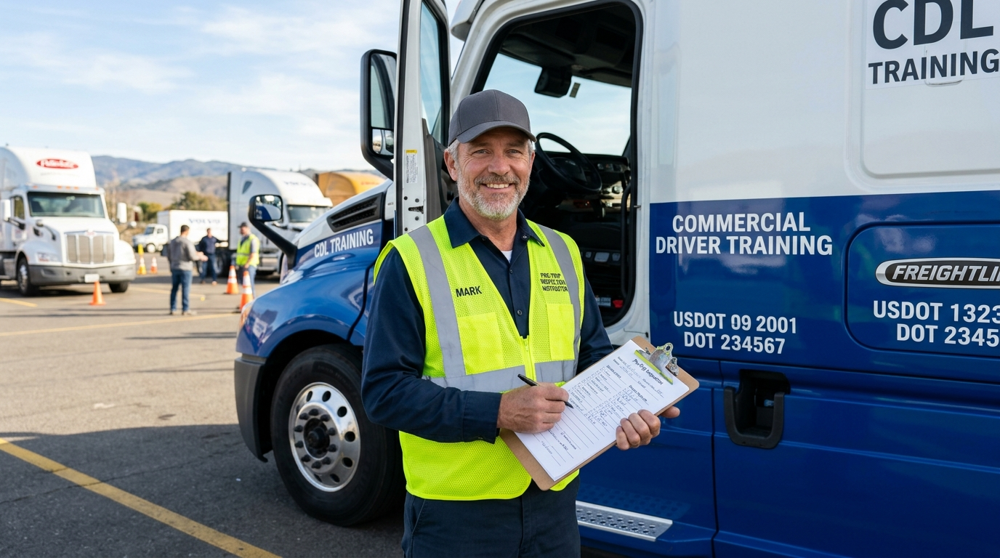

Every instructor holds an active CDL, has logged over 500,000 safe miles, and is state-certified to train new drivers.
Lead CDL Instructor — Class A
28 years of OTR driving experience. Certified in Class A, HazMat, Tanker, and Doubles/Triples. Has trained 800+ licensed CDL holders.

Class A/B Instructor
Former fleet manager with 20 years in trucking. Specializes in defensive driving techniques and pre-trip inspection.
Endorsement Specialist
15 years in HazMat and Tanker operations. Former DOT examiner with deep knowledge of CDL testing standards.
Behind-the-Wheel Trainer
22 years of regional and OTR driving. Expert in backing maneuvers, night driving, and mountain terrain operations.
Career Services Director
12 years in trucking recruitment. Manages relationships with 200+ carrier partners and oversees job placement for all graduates.
Classroom Instructor
Former safety director for a major carrier. Teaches DOT regulations, trip planning, cargo securement, and hours of service.
We hold our instructors to the highest standards in the industry, ensuring you receive the best possible training.
Every instructor maintains an active Class A CDL with zero preventable violations and clean driving records.
At least half a million accident-free commercial highway miles navigating tight city docks and adverse weather.
All instructors meet strict Entry-Level Driver Training (ELDT) criteria and state Department of Education licensure.
Dedicated mentors who treat every student with respect, personalized pacing, and supportive coaching.
From early morning vehicle inspections to live highway miles, experience the structured daily coaching rhythm that produces 98% first-time pass rates.
Hands-on physical component inspection with your mentor: air brake leak-downs, fifth-wheel locking pins, steering knuckles, and tire pressures.
Master tight maneuvers on our private 20-acre driving pad. 1-on-1 ground spotter guidance through straight-line, 90-degree alley dock, and parallel stalls.
Head onto real Memphis highway lanes and city freight corridors. Practice float shifting, progressive braking, blind-spot sweeps, and safe merges.
Our instructors do not rest on past credentials. Every faculty member undergoes annual FMCSA ELDT recertification, CVSA inspection mastery, and technical diesel powertrain training.
Our instructors are consistently praised for their patience, expertise, and genuine investment in student success.
"Mike Reynolds is an incredible instructor. He has this calm, patient demeanor that makes even the most nerve-wracking maneuvers feel manageable. I owe my CDL to him."
"Sarah's pre-trip inspection training was so thorough that the actual CDL test felt easy. She covers every detail and makes sure you truly understand the 'why' behind each check."
"Robert spent extra time with me on offset backing until I had it down cold. That personal investment makes all the difference. The entire team genuinely cares."

Our veteran instructors are ready to help you earn your CDL and start a rewarding, high-income career on the road. Enroll today.